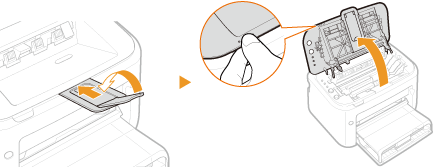
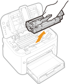
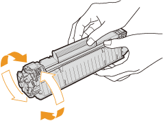
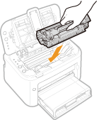

Using Up All of the Toner
Printout symptoms like the following appear when toner begins to run low.
|
White streaks appear
|
|
Faded
|
|
Uneven density
|
|
 |
 |
 |
When symptoms like these appear, take the following steps. They will allow you to use up all of the toner in the toner cartridge. You will be able to continue printing for a while longer, until the toner runs out completely. If the symptoms do not improve after you take the following steps, replace the toner cartridge (How to Replace Toner Cartridges). Before starting, read the safety instructions in Maintenance and Inspections and Consumables.
1
Close the auxiliary tray, and then open the top cover.

2
Remove the toner cartridge.

3
Shake the toner cartridge 5 or 6 times as shown below to evenly distribute the toner inside the cartridge.

4
Replace the toner cartridge.

5
Close the top cover.